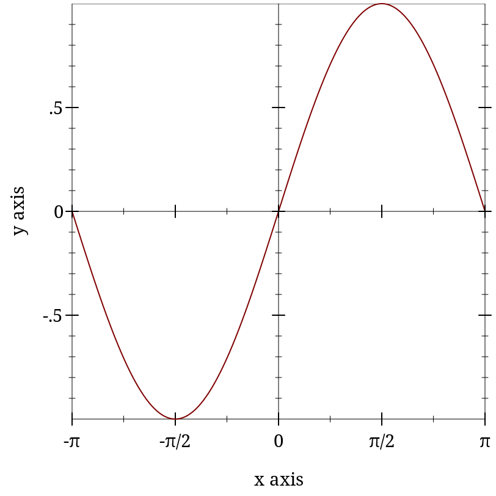

7.0.0.18
5 Nonrenderers
| (require plot) | package： plot-gui-lib |
The following functions create nonrenderers, or plot elements that draw nothing in the plot.
函数
(x-ticks ts [#:far? far?]) → nonrenderer?
ts : (listof tick?) far? : boolean? = #f
函数
(y-ticks ts [#:far? far?]) → nonrenderer?
ts : (listof tick?) far? : boolean? = #f
函数
(z-ticks ts [#:far? far?]) → nonrenderer?
ts : (listof tick?) far? : boolean? = #f
Although ticks-add allows placing arbitrary major and minor ticks on an axis, it does not allow them to be formatted differently from the other ticks on the same axis. Use one of these functions to get maximum control.
例如：
> (parameterize ([plot-x-ticks no-ticks]) (plot (list (function sin (- pi) pi) (x-ticks (list (tick (- pi) #t "-π") (tick (* -3/4 pi) #f "") (tick (* -1/2 pi) #t "-π/2") (tick (* -1/4 pi) #f "") (tick 0 #t "0") (tick (* 1/4 pi) #f "") (tick (* 1/2 pi) #t "π/2") (tick (* 3/4 pi) #f "") (tick pi #t "π"))) (axes)))) 
When considering using one of these functions, remember that minor tick labels are never drawn,
and that including a z-ticks nonrenderer will not add extra contour lines to contour plots.
函数
(invisible-rect x-min x-max y-min y-max) → nonrenderer?
x-min : (or/c rational? #f) x-max : (or/c rational? #f) y-min : (or/c rational? #f) y-max : (or/c rational? #f)
Returns a nonrenderer that simply takes up space in the plot. Use this to cause the plot area to include a minimal rectangle.
函数
(invisible-rect3d x-min x-max y-min y-max z-min z-max) → nonrenderer? x-min : (or/c rational? #f) x-max : (or/c rational? #f) y-min : (or/c rational? #f) y-max : (or/c rational? #f) z-min : (or/c rational? #f) z-max : (or/c rational? #f)
Returns a nonrenderer that simply takes up space in the plot. Use this to cause the plot area to include a minimal rectangle.
See invisible-rect for a 2D example.